If you are a weaver who works on a frame loom, you might have come across floor-loom weaving patterns that look equally interesting and intimidating. Floor-loom weavers have to know how to read weaving patterns to set up their looms properly: thread all the ends in the right sequence through the heddles and tie the treadles to the shafts accordingly.
But the patterns come in handy for frame-loom weavers too, if you know how to decipher them. Luckily, there is no lengthy setup needed when weaving simple patterns on a frame loom — just some focus and a strict sequence.
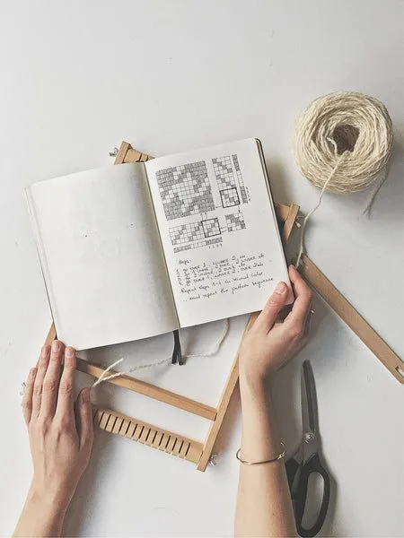
How to read weaving patterns
Every pattern draft consists of four areas: the threading (bottom left), the treadling sequence (right), the treadle tie-up (bottom right), and the big weaving pattern area that shows what the pattern will look like woven. In a weaving pattern, every vertical row of boxes corresponds to a single warp thread, and every horizontal row of boxes corresponds to a single weft thread. A solid box means a weft thread shows over a warp thread; a blank box means a warp thread is visible, with a weft thread going under.
Deciding on the number of ends (warp threads)
To warp your frame loom properly, have a look at the threading sequence of the pattern (the box on the bottom left) and look for the pattern repeat. For houndstooth, it's 4. Multiply your warp by the number of ends in the pattern repeat. You can also add extra ends on each side for stability. I prepared a warp of 20 (5×4) plus an extra 2 ends on each side, for 24 ends total.
Writing down the sequence
The same applies to the treadling sequence. Look for the pattern repeat to know how many passes create a full block. For houndstooth it's 8 passes: 4 white threads plus 4 black threads. That means you will pass the weft 8 times before you repeat this sequence over and over to create the pattern.
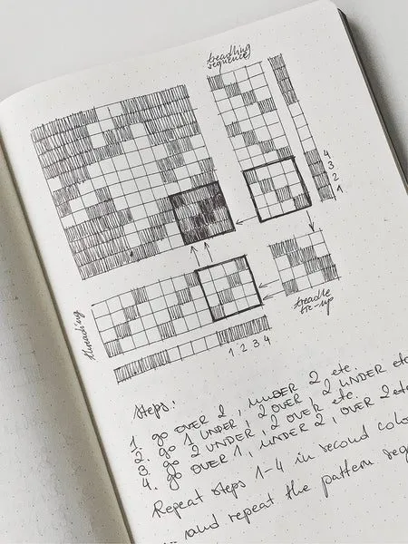
Warping a frame loom for houndstooth
As you can see in the pattern draft, the houndstooth pattern is made with two colors of yarn. First, prepare the warp. I am using black and white wool for both warp and weft. Make sure to use rather chunky yarn for this pattern — it looks best when it's dense.
I add two extra white warp threads at the beginning, then start warping: 4 black threads, 4 white threads, 4 black threads, and so on. When I'm done, I add 2 more white threads at the end. These two threads at the beginning and at the end are there for support. I will only weave plain weave there, always starting my houndstooth pattern sequence from thread number 3.
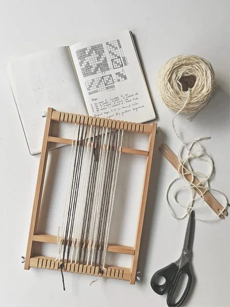
Houndstooth weaving sequence
To write down the weaving sequence, use a single weaving pattern block, corresponding to the pattern repeats of the threading and treadling. Start at the lower left-hand side — this is the first crossing of the warp and weft — and work your way through all the warp ends in the sequence. This is pass number 1 (OVER 2, UNDER 2, OVER 2, UNDER 2, etc.). Go to the row on top of it and write down the sequence, again starting on the left-hand side (UNDER 1, OVER 2, UNDER 2, OVER 2, etc.). Work your way through all 4 passes.
This is the correct weaving sequence for houndstooth:
- OVER 2, UNDER 2, OVER 2, UNDER 2…
- UNDER 1, OVER 2, UNDER 2, OVER 2…
- UNDER 2, OVER 2, UNDER 2, OVER 2…
- OVER 1, UNDER 2, OVER 2, UNDER 2…
Weave steps 1–4 using the first color. Then repeat steps 1–4 using the second color. Your first block is finished. Repeat the full pattern sequence until the sample is woven.

Weaving the first pick of weft
Start by tying your weft to the first warp thread on the left, then go under the second thread to anchor your weft and start your weaving sequence. As mentioned, I start at warp thread number 3, going over 2 threads, under 2 threads, over 2 threads, and I finish before the last two warp ends — these are again woven in plain weave.
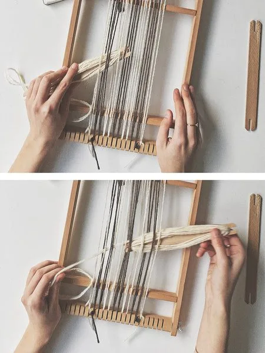
Working from left to right with a shed stick
Because my sequence is written down counting from left to right, that's how I count the warp ends too. It might get confusing to go from left to right and then from right to left, so I stick to counting from the left. I use an extra stick to help me count and work as a heddle. I skip the first two warp threads and start counting from thread number 3 again, going under 1 thread, over 2 threads, under 2 threads, etc. I skip the last 2 threads again and open the shed (opening in the warp) by turning the stick. Now, just like before, I weave tabby (plain weave) on the last 2 threads, pass the weft through the shed, and weave tabby on the first two threads to anchor the weft. The first pass is complete.
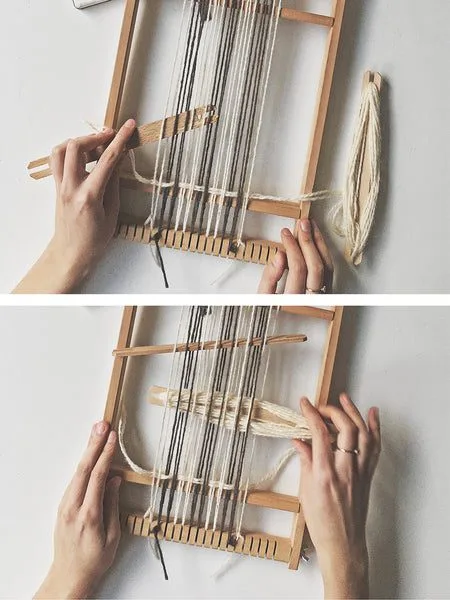
Finishing the first block
The full block is 4 passes of white yarn. For the third pass, I skip the side threads and start counting from thread number 3 again, going under 2 threads, over 2 threads, under 2 threads, etc. For the final pass I use a shuttle stick as a heddle, and counting from left to right I go over 1 thread, under 2 threads, over 2 threads, under 2 threads, etc., and pass the yarn through the opening. The first block is now finished and it's time to change the yarn.
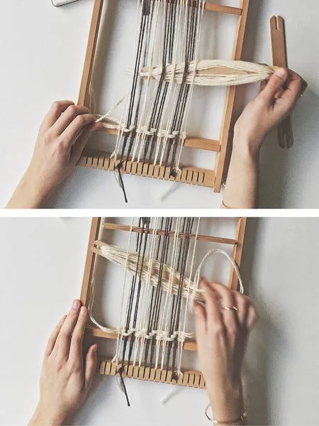
Repeating the sequence in black
The houndstooth pattern is made by alternating between two yarn colors. Both warp and weft are woven in a 4-thread block. After finishing the first block of white weft, use the second color and simply repeat steps 1–4. You will see the pattern slowly emerging.
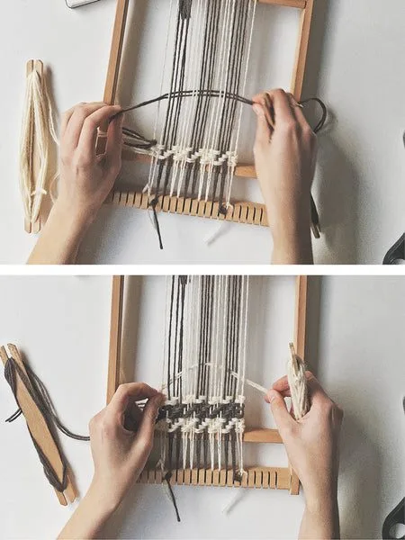
Working the pattern
After 4 passes of black yarn, change the color back to white and repeat the full sequence: steps 1–4 in white, steps 1–4 in black, etc. You can see a very distinctive pattern building up by now. Continue until you're happy with the size of your weaving.
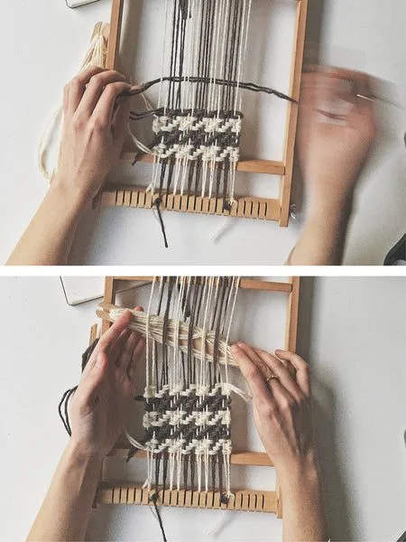
Uses — wall hangings, patches, samples
You can use this technique to make patterned wall hangings on your frame loom, either as a pattern itself or integrated into a broader design.
You can also make small patches or patterned coasters, or any other small projects. Sampling patterns on a frame loom can also be a good idea for floor-loom weavers: you can quickly test how yarns work together without the long set-up of a floor loom.
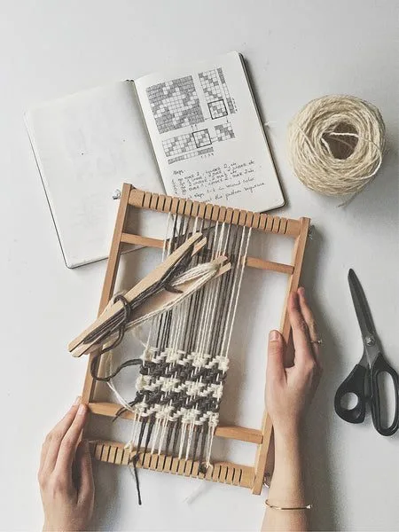
Straight twill sequence
The twill pattern is a very simple yet beautiful pattern consisting of visual diagonal lines formed in the weaving. The sequence developed from the twill pattern draft (left to right):
- OVER 2, UNDER 2, OVER 2, UNDER 2…
- UNDER 1, OVER 2, UNDER 2, OVER 2…
- UNDER 2, OVER 2, UNDER 2, OVER 2…
- OVER 1, UNDER 2, OVER 2, UNDER 2…
Repeat the pattern sequence. The houndstooth pattern is basically a twill pattern with two alternating colors.
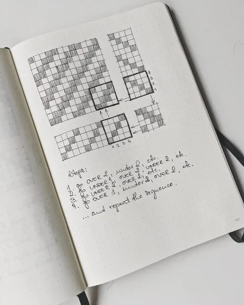
Reverse twill (chevron) sequence
This pattern is also called the chevron pattern — a very elegant yet simple one. The sequence starts just like straight twill and reverses after the first 4 steps (left to right):
- OVER 2, UNDER 2, OVER 2, UNDER 2…
- UNDER 1, OVER 2, UNDER 2, OVER 2…
- UNDER 2, OVER 2, UNDER 2, OVER 2…
- OVER 1, UNDER 2, OVER 2, UNDER 2…
- Repeat step 3
- Repeat step 2
Repeat the full pattern sequence.
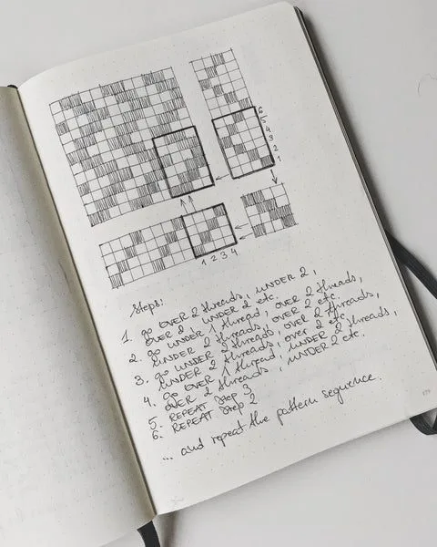
Diamond twill sequence
Here's another variation of twill, making up a lovely diamond pattern. The pattern repeat for the threading is 6 ends. That means for this one you have to prepare a warp multiplied by 6 ends. A single pattern block here consists of 6 warp threads and 6 weft passes. The sequence (left to right):
- UNDER 1, OVER 3, UNDER 3, OVER 3…
- OVER 2, UNDER 1, OVER 2, UNDER 1…
- OVER 1, UNDER 3, OVER 3, UNDER 3…
- UNDER 2, OVER 1, UNDER 2, OVER 1…
- Repeat step 3
- Repeat step 2
Repeat the full pattern sequence.
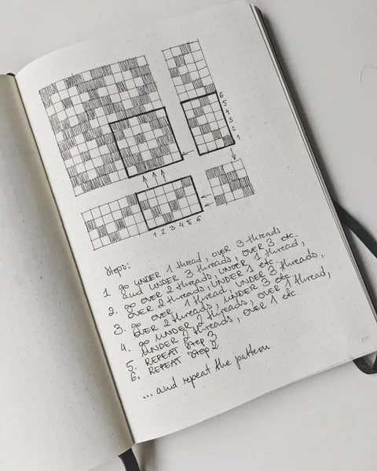